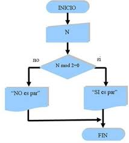
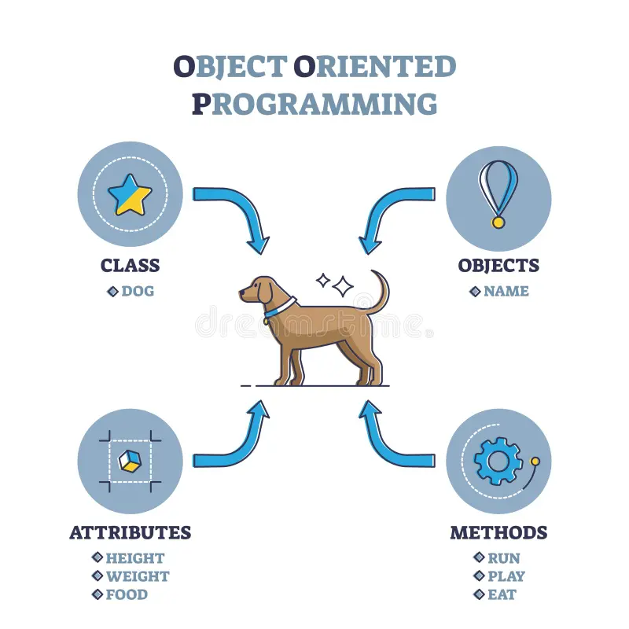

La programación es el proceso mediante el cual se diseñan, escriben, prueban y mantienen los códigos fuente de software, utilizando diversos lenguajes de programación. Esta disciplina es fundamental para el desarrollo de aplicaciones, sistemas operativos, páginas web y una gran variedad de soluciones tecnológicas que facilitan la vida moderna y automatizan tareas.
Aprender a programar implica comprender la lógica computacional, las estructuras de datos, algoritmos y paradigmas de programación como la programación estructurada, orientada a objetos y funcional. Los lenguajes más comunes incluyen Python, Java, C++, JavaScript, entre otros, cada uno con sus usos y características específicas.

La depuración y pruebas son fases críticas en la programación para garantizar que el software funcione correctamente, sea eficiente y seguro. Además, la documentación y el mantenimiento son necesarios para facilitar futuras modificaciones y la escalabilidad de los sistemas.
También se estudian conceptos como el control de versiones, que permite gestionar los cambios en el código de forma colaborativa, y buenas prácticas de programación que fomentan la legibilidad y calidad del software.
| Tipo de Dato | Descripción | Ejemplo |
|---|---|---|
| Entero | Números sin parte decimal | 42 |
| Flotante | Números con decimales | 3.14 |
| Cadena | Texto | "Hola Mundo" |
| Boleano | Verdadero o falso | true / false |